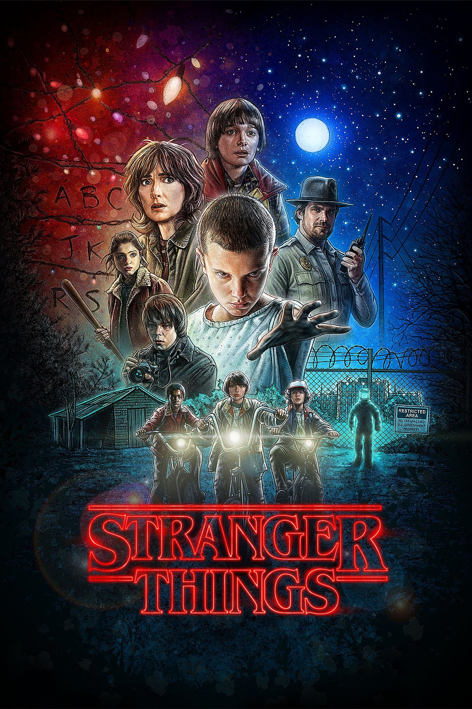
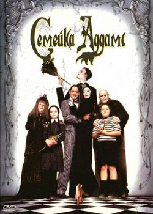
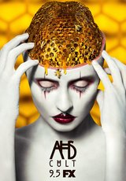
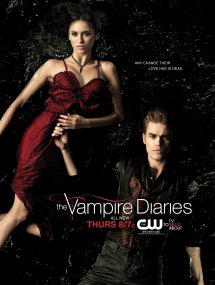
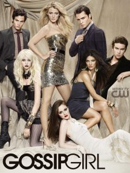
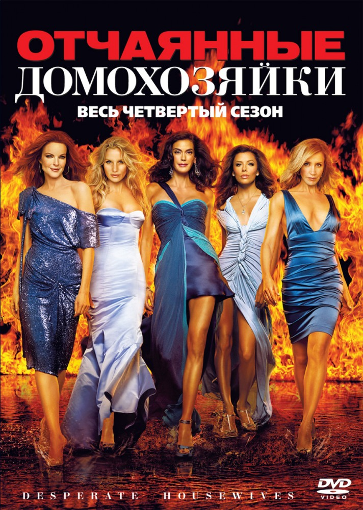

|  | Маленький городок Хокинс потрясён загадочным исчезновением 12-летнего Уилла Байерса. Свет на это дело может пролить беспризорная девочка по прозвищу Одиннадцатая, которая сбежала из секретной лаборатории и обладает невероятными способностями. Поиски Уилла приводят к разоблачению тёмных правительственных тайн и столкновению со сверхъестественными силами из другого измерения. |
|  | Семейка Аддамсов — это не обычная семья: им нравится то, что нормальным людям кажется ужасающим. Гомез – довольно обеспеченный человек, и постоянно потворствует желаниям своей супруге Мортиши, и не важно, будь то культивирование опасных растений или ужин при свечах на городском кладбище. Посетителей дома Аддамсов шокируют дворецкий-амбал Ларч или живая рука в коробке, которую называют просто «вещь», однако на самом деле эта пугающая семейка оказывается примером самой искренней любви. |
|  | Проклятые дома и адские психбольницы, изуверские маньяки и потусторонние силы зла, жестокость, мистика и атмосфера страха, – всё накопленное «богатство» жанра хорроров предстало в одном сериале Райана Мёрфи и Брэда Фэлчака. Их усилия получили отклик во всем мире: сериал завоевал 230 номинаций и 60 побед на разных премиях, а главное – статус культового телешоу. В разные десятилетия в разных уголках Америки воцаряется ад на земле. В старый калифорнийский дом с плохой репутацией переезжает семья, которая старается пережить внутренний разлад... и встречу с прошлыми жертвами дома. В 1960-е годы психбольница штата Массачусетс становится храмом сатанизма, садизма и всех разновидностей зла. В Новом Орлеане восстают из забвения потомки салемских ведьм, а где-то во Флориде выступление цирка уродов принимает отнюдь не смешной оборот. Каждый из семи сезонов антологии - это новые локации, новые персонажи, но давно полюбившиеся зрителям актёры, среди которых - Сара Полсон, Эван Питерс, Джессика Лэнг, Кэти Бэйтс, Леди Гага, Мэтт Бомер, Уэс Бэнтли, Анджела Бассетт, Закари Куинто и многие другие. |
 |
Основой для этого сериала послужили персонажи всем известных волшебных сказок. Злая королева накладывает проклятие на обитателей волшебного мира. Она обещает ожидающей ребёнка Белоснежке, что все они в итоге окажутся в месте, где у сказок не будет счастливого конца. Тёмный маг Румпельштильцхена объясняет принцессе, что её пока не родившаяся дочь вернётся в свой 28-й день рождения, чтобы избавить этот мир от кары Злой королевы. В итоге главным действующим лицом истории становится девушка по имени Эмма – охотник за головами. Когда на пороге её дома появляется маленький мальчик, представившийся её сыном, она начинает подозревать неладное. Эмма отправляется вместе с ним в городок Сторибрук, ставший настоящей тюрьмой для обитателей сказок. |
 |
Пожалуй, наиболее известный в настоящее время фэнтезийный сериал – «Игра престолов», основанный на книжной серии писателя Джорджа Мартина «Песнь Льда и Пламени». Его события разворачиваются в вымышленном мире, напоминающем средневековую Европу. Особенность сериала состоит в том, что в центре истории находится не один, а сразу множество персонажей, каждого из которых можно назвать главным. Здесь, где повсюду зреют заговоры, тяжко придётся тем, кто не может за себя постоять. Даже для зрителей, читавших книги, многие смерти основных действующих лиц оказывались полной неожиданностью. В этом году канал HBO пошёл ещё дальше – премьера шестого сезона «Игры престолов» состоится раньше, чем появится на прилавках новая книга, сюжет которой положен в его основу. Сериал много лет удерживает звание наиболее дорогого телевизионного фэнтези-проекта. За пять лет «Игра престолов» была удостоена 26 премий «Эмми» в различных номинациях, при этом сериал был номинирован на её соискание 86 раз. |
|  | В основу сериала положена одноимённая книга Лизы Джейн Смит. События разворачиваются в вымышленном городке Мистик Фоллс, в котором, наряду с обычными людьми, живут и различные сверхъестественные существа. Первоначально сюжет фокусируется на трёх главных героях – простой девушке Елене Гилберт, а также братьях-вампирах – Стефане и Дэймоне Сальваторе. |
|  | Ученики престижной частной школы, расположенной на Манхэттене, из блога Сплетницы узнают о возвращении в город Серены Ван Дер Вудсен, ранее отправившейся обучаться за границу. Сплетница – человек-загадка, личность которого на протяжении всех сезонов останется тайной. Всё, о чём он или она пишет в блогах, тотчас облетает всю модную тусовку города: её сплетни раскрывают тайны, делают достоянием общественности любые произошедшие скандалы. |
|  | На волне успеха «Секса в большом городе» на экранах появляется история четырёх домохозяек, отчаянно ищущих личного счастья. Сьюзан, переживающая измену мужа и тяжёлый развод, влюбляется в сантехника Майка Дельфино, Линет приходится оставить любимую работу и заняться воспитанием четверых непослушных детей, Бри Ван де Камп тоже вот-вот разведётся – её муж требует подписать необходимые бумаги, а бывшая модель Габриэль Солис, соблазнившая юного садовника, боится, что об этом узнает её муж. Привычную и размеренную жизнь нарушает печальное известие: самоубийством заканчивает жизнь их подруга Мэри-Элис Янг – говорят, что она получила письмо от некоего шантажиста. |